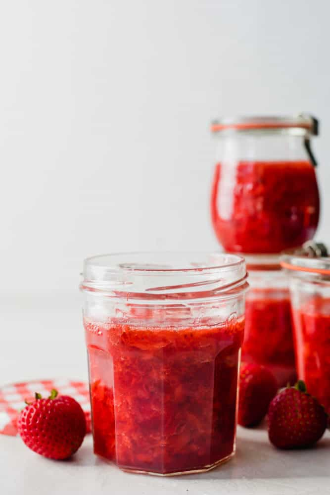

Homemade Strawberry Jam

Description
This summer, try out this simple jam recipe! Only 3 ingredients required.
Make jam to last you for months with a simple canning technique. This is my go-to recipe for
making delicious jam. Makes 3 jars, or 2 and a half, depending on your cooking time.
Ingredients:
- 1 kg of fresh strawberries, cleaned and sliced.
- 500 grs of sugar.
- Juice of a lemon.
Steps:
- Clean your strawberries and cut them in small slices. Put them in a medium to big pot.
- Add the sugar and lemon juice. Mix together.
- Turn on the stove, on high heat until it starts boiling. Reduce heat to low once it boils.
- Cook on low heat for 30 minutes, mixing occasionally so it doesn't stick to the pot.
- Check the consistency on a plate. If it's too runny, cook for 10 more minutes. If it reached the desired consistency, turn the stove off.
- Let it cool slightly before putting it in the jars. If you didn't do the canning process, the jam will only last for a month on the shelf.
Recipe by The Recipe Critic.